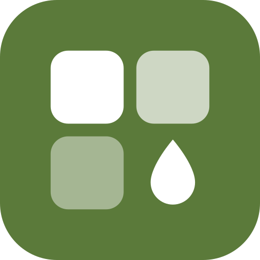

KOReader plugin
Tinta
An app dashboard for e-ink readers: a home grid of widgets and notifications. A sleep page stays on screen while the device sleeps and wakes only to refresh.

An app dashboard for e-ink readers: a home grid of widgets and notifications. A sleep page stays on screen while the device sleeps and wakes only to refresh.